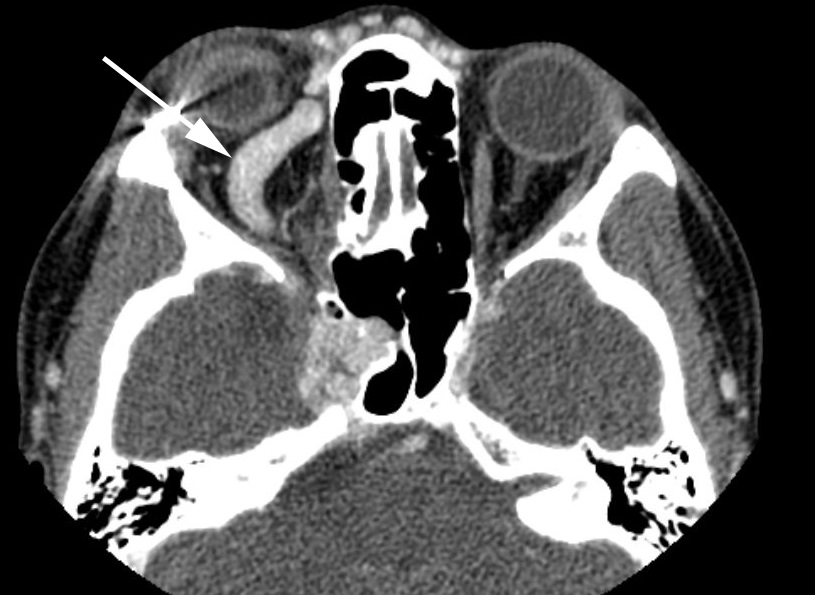
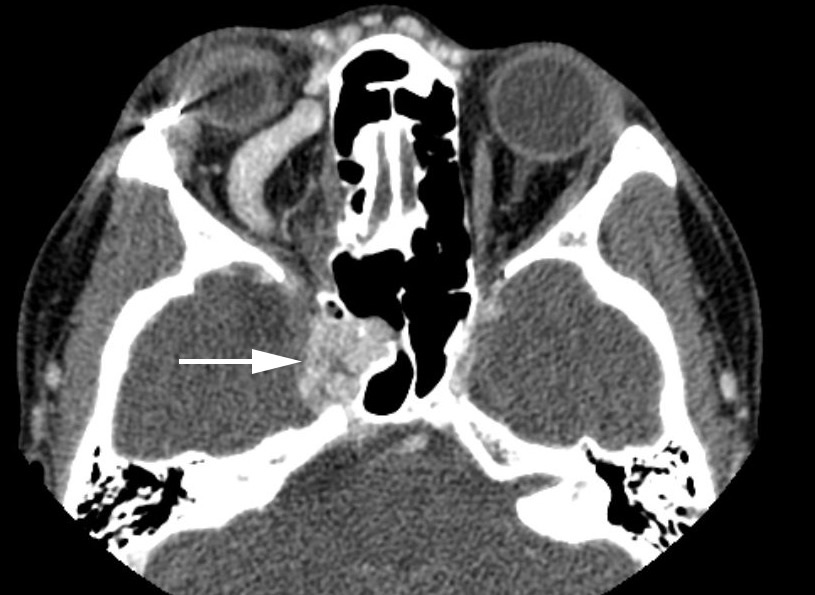

Proptosis

- Forward displacement of one eye or both eyes
- Orbital causes: tumor, infection, non-infectious inflammation, orbital bone-expanding tumors
- Cavernous sinus causes: direct carotid-cavernous fistula, indirect (dural) carotid-cavernous fistula, cavernous sinus thrombosis
-
Core clinical features
- Eye protrudes more than expected
-
Tip: there is great variability even among normal subjects, so look for findings to support pathologic forward displacement of the eye
-
Possible accompanying clinical features
- Periocular pain
- Diplopia
- Increased resistance to retropulsion of the eye
- Upper lid retraction
- Swollen, red, or tender lids, lacrimal gland, conjunctiva
- Upward or downward displacement of the eye (“ocular dystopia”)
- Reduced ocular ductions
- Eye misalignment
- Elevated intraocular pressure
- Reduced visual acuity or visual field
- Lid lag
- Upper lid ptosis
- False appearance of proptosis caused by upper lid retraction, large eyes (myopia, buphthalmos), congenitally shallow orbits (“exorbitism”)
- Distinguish orbital from retro-orbital (cavernous sinus) disorders, which may be difficult
-
Push on (retropulse) the eyes with your hands, grading resistance as
- Mild: orbitocavernous venous congestion
- Moderate: orbital tumors or inflammation
- Marked: orbital wall thickening or very firm and large orbital tumors
- Measure intraocular pressure, which you must lower if it is extremely high
- Apply the “suction duction” (“forced duction”) test if the eye has markedly reduced movement and you suspect restriction Forced Ductions
-
Order orbitocranial imaging, with the following ideas in mind
- Thin-section CT provides excellent views of the orbit, and can disclose an enlarged superior ophthalmic vein, or sometimes a dilated cavernous sinus of carotid-cavernous fistula
- MRI provides better views of the cavernous sinus, and can suggest cavernous sinus pathology, but may not show the early venous filling of carotid-cavernous fistula, even with MRA and MRV
- Special dynamic sequences may disclose the early venous filling of the carotid-cavernous fistula, but digital catheter angiography will be necessary for definitive diagnosis and characterization of supplying and draining channels
- Diffusion-weighted MRI may disclose the restricted diffusion typical of cavernous sinus or orbital venous thrombosis
-
Tip: pay attention to the appearance of the paranasal sinuses, as important orbital and cavernous sinus lesions originate there and are accessible to biopsy

-
Tip: prompt diagnosis of orbital infection, especially aspergillosis and mucormycosis, and cavernous sinus thrombosis can be life-saving
- Orbital wall removal for Graves disease is indicated only if the patient exhibits signs of an optic neuropathy and imaging discloses apical extraocular compression of the optic nerve
- Orbital biopsy is indicated only if the mass is readily accessible and surveillance of other—more accessible—sites has been negative
- Endovascular treatment usually closes a carotid-cavernous fistula with acceptable risks, but more than one treatment may be necessary (See Carotid-cavernous Fistula)
-
Treatment of carotid-cavernous fistula has hazards, including stroke, so treatment of indirect (dural) fistulas should be undertaken only if the patient meets at least one of the following clinical criteria
- Intractable pain
- Intractable diplopia
- Reduced vision from optic neuropathy
- Marked cosmetic blemish
- Intractably elevated intraocular pressure
- Retinal vein occlusion
- Non-resolving congestive signs after at least one year of follow-up